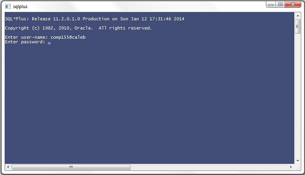

BASIC SQL SELECT Statements
Getting Started
Due
Nothing is due for this lab.
Prerequisites
Read Chapter 1, pages 2-20 (very top only).
Read about data dictionaries in the online Oracle documentation link.
Objectives
- Introduction to SQL
- Use SQL*Plus
- Create databases needed for this course
- Understand the Data Dictionary views
Introduction
When first faced with Oracle, most students wonder which physical file contains the database. Unlike Microsoft Access and other such products, Oracle does not store the database files in a physical file. You cannot point to a single file on the hard drive and say that that is the database. Instead, Oracle stores information about the database in a series of tables or data dictionary views. If you want to find out what tables you own, you need to look in a user_table table. If you want information about indexes, you must look in the user_indexes table and so on. In this lab you will look at some of the user tables.
Do
Part 1: An Introduction to Oracle Databases
Chapter 1:
- Review the material in your lab text on pages 2 - 20.
- You will be running the script in your own schema so you will not be required to set up the user as described on page 11. In fact, you cannot run these commands because you need special privileges to create a user and your account has not been assigned that permission.
- The Store schema has been set up for you to use under the schema name STOREDB. Your account has been assigned read privilege to this schema so you can issue SELECT SQL statements against those tables there. This will enable you to try most of the commands provided in your Jason Price book.
Starting Oracle:
- You will be using the "instant client" to connect to the Oracle database server. Follow the instructions below to connect to it.
- How to connect to an Oracle database using SQL*Plus
- A SQL*Plus icon should appear on your desktop. Double-click the icon to launch an Oracle application that can connect to a database. (Note: Do NOT use SQL Data Modeler or Developer.) If you don't have the SQL*Plus icon, or if it doesn't work correctly, you can create your own icon/shortcut to SQL*Plus. See the Note at the end of this lab.
- To logon, you will be using the last 12 letters of your last name (with any spaces removed) for the User Name: and your student id (minus the C and preceding zeros) for the Password. The logon will be as follows:
Enter user-name: UserName@caleb (Note: "caleb" is the name of the database. You can have spaces around the "@" symbol if you wish.)
Enter password: Password
Your logon will look like:

You will now be logged into your own user account.
Note: If you have problems, check with your instructor. Your account may not have been created yet, or may be slightly different due to a conflict with a pre-existing user.
- If you see the prompt SQL> appear in the SQL*Plus window, you have successfully connected.
- Once you have successfully connected to the database, you can continue with Part 2 of the lab.
Part 2: Loading the database
Now that you have connected, it is time to build your database. You will be using the "human resources" database from Oracle in this course. To load this database into your schema follow these instructions:
- First copy the database create and load files from the Comp 155 website to your H: drive. The create and load files are found at the bottom of the Lecture/Labs page. You will want the Human Resources files (If you are using the Microsoft Internet Explorer browser, be sure to right-click and "Save Target As", otherwise you will get some odd HTML codes added.) [Note: We are loading the Human Resource tables instead of Store Schema tables of the book because (a) the tables have more rows, and (b) these are the tables used by the Oracle certification exams.]
- The nine (9) Human Resources schema files have been zipped together. You will need to unzip them before proceeding with the next step.
- Once these files have been unzipped on your H: drive (for example in a directory called "comp155") you are ready to use them to create and populate the databases in your account.
- Before you can run the scripts, you will need to modify the script that creates the Human Resource schema. Open the file called HR_Start.sql in a text editor such as Notepad or Textpad (do NOT use Word or any word processor that will add formatting). Change the text that says "<path here>" to the path where you have placed all the files. For example, if you have all the files on your H: drive in a directory called "comp155" you should change to H:\comp155\. The first line in HR_Start.sql would look like
@H:\comp155\hr_cre.sql
and so on...
- Switch back to your SQL*Plus window
- Now load the databases using the following commands (assuming your files are in a directory called "comp155" on your H: drive):
SQL> @H:\comp155\HR_Start.sql
You should tables being created and data loaded. Lots of commands should be scrolling past on your SQL*Plus window.
NOTE: If you see and obvious error messages scroll by, be sure to contact your instructor for help.
- You are now ready to proceed with Part 3 of the lab.
Part 3: Data Dictionary
- To find what tables you have just loaded, enter the following SQL command:
SELECT table_name
FROM user_tables;
- If you would like to know the structure of one of the tables, e.g. departments, enter the following SQL*Plus command:
DESC departments
- To view the contents (data) of the departmentstable, issue the following SQL command:
SELECT *
FROM departments;
- There are lots of other tables with interesting information for the user. Among these are:
user_catalog
user_constraints
user_cons_columns
user_indexes
user_ind_columns
user_synonyms
user_tab_columns
user_col_comments
user_views
Use the DESC command and the SELECT <attributes> FROM <table_name> command to view the structure and contents of each of these tables in your schema.
For example:
DESC user_constraints
and then
SELECT owner, constraint_name, constraint_type, table_name
FROM user_constraints;
Don't worry if they are a bit confusing at this stage. You will learn more about the value of these tables during the course. For your information, your tables don't have entries for all these user tables.
- If you know how to access the information in these data dictionary tables, you will be able to better manage your labs throughout this course. Spend some time practicing with these different data dictionary tables.
- Oracle also has a special dummy table called DUAL which is mainly used to execute SQL statements when there is no base table needed for the query to execute successfully. It can be handy for getting system information or doing some basic arithmetic.
- To see how the DUAL table operates within a SQL command, try the following commands:
SELECT sysdate, user
FROM dual;
SELECT 21-5
FROM dual;
SELECT 21-5 + 6
FROM dual;
Demonstrate
- You should confirm with your instructor that you have completed all parts of the lab.
Hand-In
- Nothing to hand-in for this lab.
Note
- If you want to install SQL*Plus on your Windows laptop, go to http://hal.cs.camosun.bc.ca/~langs/comp155-utils and download the two instant client zip files, extract them to the same folder location, then copy the tnsnames.ora file (from that web location) into that folder location.
- If you wish to create a shortcut to SQL*Plus on your desktop, you can do the following steps:
- Using Windows Explorer, select "Computer", then "Local Disk (C:)".
- Find the "Oracle" directory, and then the "instantclient_11_2" directory. (Ignore the two .zip files).
- Scroll down until you see the "sqlplus.exe" file.
- Right-click on the file name, and then select "Create shortcut".
- Drag your new shortcut to the desktop. The SQL*Plus shortcut will now be available on your desktop for all your future work.
- You can now access SQL*Plus by double-clicking on the shortcut on your desktop.